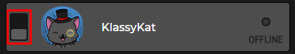
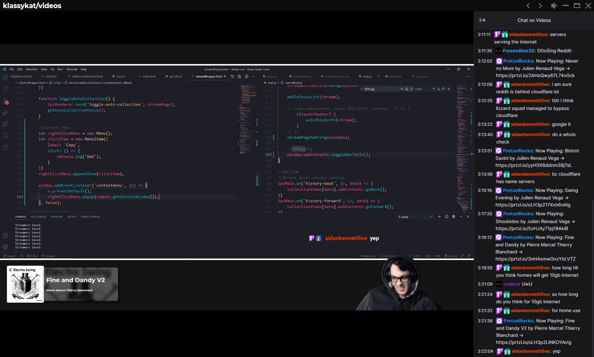
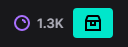
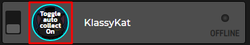
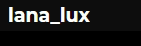
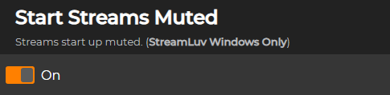

-
Auto Open Streams
Any streamer added to StreamLuv can be set to auto open when they go live with the toggle switch on the side.
Streams can either be opened in your default browser window or inside of a StreamLuv Window
-
StreamLuv Window
A StreamLuv window is a stream contained inside of the StreamLuv app. It gives most of the functionality you'll find in StreamLuv.
You'll need to be in a StreamLuv window to use features like channel point auto collection, starting streams muted, using global shortcuts, and auto theater.
-
Auto Collect Channel Points
When inside of a StreamLuv window channel point chest can be automatically collected.
This can be toggled on and off by click a streams portrait.
This can also be toggled while watching a stream by click the page title.
The page title will be blue when auto collection is active.
-
Start Streams Muted
In the settings you'll find the option to start streams muted.
This (believe it or not) makes is so any time a stream is opened it is initially muted. This effects the page mute and not twitch's player mute.
-
Global Mute Shortcut
StreamLuv windows allows you to have a global shortcut for muting streams. The default for this is Ctrl+' and it will toggle the mute of the most recently selected window and mute all other StreamLuv windows. The assignment for this shortcut can be changed in the settings.
-
Auto Theater
Auto theater is toggle-able in the settings and will automatically make the player go into theater mode when a stream is opened.